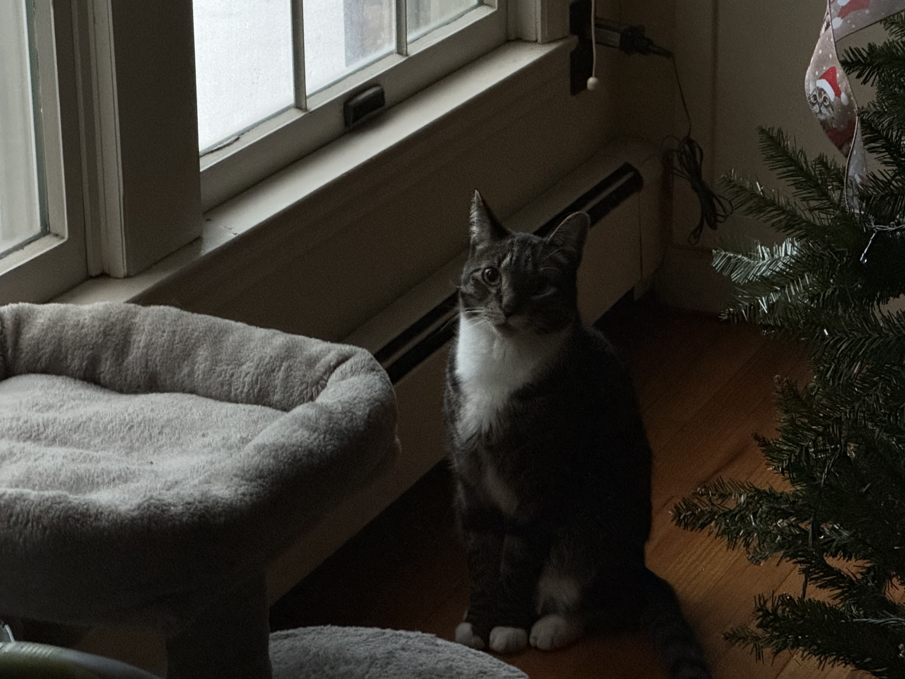

About
This site is for you if:
- You are managing a chronic illness and have many specialist visits
- You want all your provider information in one place
- Reminders to schedule routine appointments would be helpful to you
Site Contributors:
Marlo Konecny
Mia Konecny